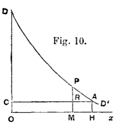

<!doctype html>
<html lang="en">

	<head>
		<meta charset="utf-8">

		<title>reveal.js - ClassHT 2</title>

		<link rel="stylesheet" href="plugin/reveal.css">
		<link rel="stylesheet" href="plugin/beige.css" id="theme">
        <link rel="stylesheet" href="plugin/monokai.css">
        <link rel="stylesheet" href="plugin/title-footer.css">
       
	</head>

	<body>

		<div class="reveal">

			<div class="slides">


                <!-- Slides are separated by three dashes (quick 'n dirty regular expression) -->
                <section data-markdown data-separator="\n---\n" data-separator-vertical="^\n--\n$">
                    <script type="text/template">
                        <!-- .slide: style="text-align: left;" -->
                        # History of Economic Analysis
                        ## Francesco Franco - Nova SBE
                        ### T1 2022 
                        ---

                        <!-- .slide: style="text-align: left;" -->
                        ### Stanley Jevons 1835 - 1882

                        Theory of Political Economy - Preface first edition 1871 

                        > The contents of the following pages can hardly meet with ready
                        acceptance among those who regard the Science of Political Economay has
                        having already acquired a nearly perfect form. I believe it is generlly
                        supposed that Adam Smith laid the foundations of this science ; that
                        Maltllus, Anderson, and Senior added important doctrines; that Ricardo
                        systematised the whole; and, finally, that Mr. J.S. Mill filled in the
                        details and completely expounded this branch of knowledge...

                        > ...In this work I have attempted **to treat Economy as Calculus of
                        Pleasure and Pain** and have sketched out, almost irrespective of previous
                        opinions, the form which the science, as it seems to me, must ultimately
                        take. I have long thought that as it deals throughout with quantities,
                        it must be a mathematical science in matter if not in language. I
                        endeavoured to arrive at accurate quantitative notions concerning
                        Utility, Value, Labour, Capital, etc., and I have often been surprised
                        to find how clearly some of **the most difficult notion**, especially that
                        most puzzling of notions **Value, admit of mathematical analysis and
                        expression**. **The Theory of Economy thus treated presents a close analogy
                        to the science of Statical Mechanics, and the Laws of Exchange are found
                        to resemble the Laws of Equilibrium of a lever as determined by the
                        principle of virtual velocities.**

                        ---

                        <!-- .slide: style="text-align: left;" -->
                        

                        Theory of Political Economy - Preface to the second edition 1879 

                        > In short, I do not write for mathematicians, nor as a mathematician, but
                        as an economist wishing to convince other economists that their science
                        can only be safactorily treated on an explicitly mathematical basis...

                        > ...Among minor alterations, **I may mention the substitution for the name
                        Political Economy of the single convenient term Economics.** This term,
                        besides being more familiar and closely related to the old term is
                        perfectly analogous in form to Mathematics, Ethics, Esthetics, and the
                        names of various other branches of knowledge, and it has moreover the
                        authority of usage from the time of Aristotle...but **it appears to have
                        been adopted also by Mr. Alfred Marshall** at Cambridge.

                        > ...The earlier treatise of Cournot, his admirable Recherche sur le
                        principes Mathematiques de la Theorie des Richesses (Paris 1838),
                        resembles Dupuit's memoirs in being, until the last few years, quite
                        unkwonwn to English economists...**Cournot did not frame any ultimate
                        theory of the ground and nature of utility and value**, but, taking the
                        palpable facts known concerning the relations of price, production and
                        consumption of commodities, he investigated these relations analytically
                        and diagraphically with a power and felicity which leaves little to be
                        desired. ..It should be added that his investigation has little relation
                        to the contents of this work, because Cournot does not recede to any
                        theory of utility, but commences with the phenomenal laws of supply and
                        demand.

                        > From this statement it is quite apparent that Gossen has completely
                        anticipated me as regards the general principles and method of the
                        theory of Economics.

                        ---

                        <!-- .slide: style="text-align: left;" -->

                        Theory of Political Economy - Introduction

                        > Repeated reflection and inquiry have led me to the somewhat novel
                        opinion, that **value depends entirely upon utility**. Prevailing opinions
                        make labour rather than utility the origin of value; and there are even
                        those who distinctly assert that labour is the cause of value. I show,
                        on the contrary, that we have only to trace out carefully the natural
                        laws of the variation of utility, as depending upon the quantity of
                        commodity in our possession, in order to arrive at a satisfactory theory
                        of exchange, of which the ordinary laws of supply and demand are a
                        necessary consequence. This theory is in harmony with facts; and,
                        whenever there is any apparent reason for the belief that labour is the
                        cause of value, we obtain an explanation of the reason. **Labour is found
                        often to determine value, but only in an indirect manner, by varying the
                        degree of utility of the commodity through an increase or limitation of
                        the supply** ....

                        > It is clear that Economics, if it is to be a science at all, must be a
                        mathematical science...My theory of Economics, however, is purely
                        mathematical in character.

                        ---

                        <!-- .slide: style="text-align: left;" -->


                        Theory of Political Economy - Theory of pleasure and pain - chapter II 

                        > Proceeding to consider how pleasure and pain can be estimated as
                        magnitudes, we must undoubtedly accept what Bentham has laid down upon
                        this subject. "To a person," he says, "considered by himself, the value
                        of a pleasure or pain, considered by itself, will be greater or less
                        according to the four following circumstances:
                        (1) Its intensity. (2) Its duration. (3) Its certainty or uncertainty.
                        (4) Its propinquity or remoteness."

                        For Jevons utility, the value of pleasure and pain, will be measurable.

                        ---

                        <!-- .slide: style="text-align: left;" -->


                        Theory of Political Economy - The theory of Utility - Chapter III 

                        > **Pleasure and pain are undoubtedly the ultimate objects of the Calculus
                        of Economics. To satisfy our wants to the utmost with the least
                        effort, to procure the greatest amount of what is desirable at the
                        expense of the least that is undesirable in other words, to maximise
                        pleasure, is the problem of Economics.**

                        > **By a commodity we shall understand any object, substance, action, or
                        service, which can afford pleasure or ward off pain...and employ the
                        term utility to denote the abstract quality whereby an object serves our
                        purposes, and becomes entitled to rank as a commodity.**

                        > My principal work now lies in tracing out the exact nature and
                        conditions of utility. It seems strange indeed that economists have not
                        bestowed more minute attention on a subject which doubtless furnishes
                        the true key to the problem of Economics. In the first place, utility,
                        though a quality of things, is no inherent quality. It is better
                        described as a circumstance of things arising out of their relation to
                        man's requirements....

                        ---

                        <!-- .slide: style="text-align: left;" -->

                        Theory of Political Economy - The theory of Utility - Chapter III

                        > Let us now investigate this subject a little more closely. **Utility must
                        be considered as measured by, or even as actually identical with, the
                        addition made to a person's happiness.** It is a convenient name for the
                        aggregate of the favorable balance of feeling produced, the sum of the
                        pleasure created and the pain prevented. **We must now carefully
                        discriminate between the total utility arising from any commodity and
                        the utility attaching to any particular portion of it.** Thus the total
                        utility of the food we eat consists in maintaining life, and may be
                        considered as infinitely great; but if we were to subtract a tenth part
                        from what we eat daily, our loss would be but slight. We should
                        certainly not lose a tenth part of the whole utility of food to us. It
                        might be doubtful whether we should suffer any harm at all.

                        > Let us imagine the whole quantity of food which a person consumes on an
                        average during twenty- four hours to be divided into ten equal parts. If
                        his food be reduced by the last part, he will suffer but little; if a
                        second tenth part be deficient, he will feel the want distinctly; the
                        subtraction of the third tenth part will be decidedly injurious; with
                        every subsequent subtraction of a tenth part his sufferings will be more
                        and more serious, until at length he will be upon the verge of
                        starvation. Now, if we call each of the tenth parts an increment, the
                        meaning of these facts is, that each increment of food is less
                        necessary, or possesses less utility, than the previous one. To explain
                        this variation of utility we may make use of space representations,
                        which I have found convenient in illustrating the laws of economics in
                        my college lectures during fifteen years past.

                        ---

                        <!-- .slide: style="text-align: left;" -->

                        Theory of Political Economy - The theory of Utility - Chapter III

                        <center></center>

                        > Let the line $ox$ be used as a measure of the quantity of food, and let it
                        be divided into ten equal parts to correspond to the ten portions of
                        food mentioned above. Upon these equal lines are constructed rectangles
                        and the area of each rectangle may be assumed to represent the utility
                        of the increment of food corresponding to its base. Thus the utility of
                        the last increment is small, being proportional to the small rectangle
                        on X. As we approach towards o, each increment bears a larger rectangle,
                        that standing upon III being the largest complete rectangle. **The utility
                        of the next increment, II, is undefined, as also that of I, since these
                        portions of food would be indispensable to life, and their utility,
                        therefore, infinitely great**.

                        ---

                        <!-- .slide: style="text-align: left;" -->

                        Theory of Political Economy - The theory of Utility - Chapter III

                        > But the division of the food into ten equal parts is an arbitrary
                        supposition. If we had taken twenty or a hundred or more equal parts,
                        the same general principle would hold true, namely, that each small
                        portion would be less useful and necessary than the last. The law may be
                        considered to hold true theoretically, however small the increments are
                        made; and in this way we shall at last reach a figure which is
                        undistinguishable from a continuous curve. **The notion of infinitely
                        small quantities of food may seem absurd as regards the consumption of
                        one individual; but when we consider the consumption of a nation as a
                        whole, the consumption may well be conceived to increase or diminish by
                        quantities which are, practically speaking, infinitely small compared
                        with the whole consumption.** The laws which we are about to trace out are
                        to be conceived as theoretically true of the individual; they can only
                        be practically verified as regards the aggregate transactions,
                        productions, and consumptions of a large body of people. But the laws of
                        the aggregate depend of course upon the laws applying to individual
                        cases....

                        Today we know that we cannot use what holds for an individual to hold at the aggregate level
                        except in special cases and in the case of the representative agent.

                        ---

                        <!-- .slide: style="text-align: left;" -->

                        Theory of Political Economy - The theory of Utility - Chapter III

                        > Let $x$ signify, as is usual in mathematical books, the quantity which
                        varies independently, in this case the quantity of commodity. Let $u$
                        denote the **whole utility** proceeding from the consumption of $x$. Then
                        $u$ will be, as mathematicians say, a function of $x$; that is, it will
                        vary in some continuous and regular, but probably unknown, manner, when
                        x is made to vary...Our great object at present, however, is to express the **degree of utility**.


                        <center></center>

                        > We find these considerations fully illustrated by Fig. IV., in which oa
                        represents $x$, and $ab$ is the degree of utility at the point $a$. Now,
                        if we increase $x$ by the small quantity $aa'$, or $\Delta  x$, the utility is increased
                         by the small rectangle $abb'a'$, or $\Delta    u$; and, since a rectangle is the product of its sides,
                          we find that the length of the line ab, the degree of utility, is represented by the fraction
                           $\frac{\Delta u}{\Delta x}$.

                        ---

                        <!-- .slide: style="text-align: left;" -->


                        Theory of Political Economy - The theory of Utility - Chapter III

                        > As already explained, however, the utility of a commodity may be
                        considered to vary with perfect continuity, so that we commit a small
                        error in assuming it to be uniform over the whole increment $\Delta x$. To
                        avoid this we must imagine $\Delta x$ to be reduced to an infinitely small
                        size, Du decreasing with it. The smaller the quantities are the more
                        nearly we shall have a correct expression for $ab$, the degree of
                        utility at the point $a.$ **Thus the limit of this fraction
                        $\frac{\Delta u}{\Delta x}$ or, as it is commonly expressed
                        $\frac{du}{dx}$ , is the degree of utility corresponding to the quantity
                        of commodity $x$**. The degree of utility is, in mathematical language,
                        the differential coefficient of $u$ considered as a function of $x$, and
                        will itself be another function of $x$.

                        > We shall seldom need to consider the degree of utility except as regards
                        the last increment which has been consumed, or, which comes to the same
                        thing, the next increment which is about to be consumed. I shall
                        therefore commonly use the expression final degree of utility, as
                        meaning the degree of utility of the last addition, or the next possible
                        addition of a very small, or infinitely small, quantity to the existing
                        stock. In ordinary circumstances, too, the final degree of utility will
                        not be great compared with what it might be. Only in famine or other
                        extreme circumstances do we approach the higher degrees of utility.

                        ---

                        <!-- .slide: style="text-align: left;" -->

                        Theory of Political Economy - The theory of Utility - Chapter III

                        > **The final degree of utility is that function upon which the theory of
                        economics will be found to turn**. Economists, generally speaking, have
                        failed to discriminate between this function and the total utility, and
                        from this confusion has arisen much perplexity. Many commodities which
                        are most useful to us are esteemed and desired but little. We cannot
                        live without water, and yet in ordinary circumstances we set no value on
                        it. Why is this? Simply because we usually have so much of it that its
                        final degree of utility is reduced nearly to zero. We enjoy every day
                        the almost infinite utility of water, but then we do not need to consume
                        more than we have. Let the supply run short by drought, and we begin to
                        feel the higher degrees of utility, of which we think but little at
                        other times.

                    

                        ---

                        <!-- .slide: style="text-align: left;" -->

                        Theory of Political Economy - The theory of Utility - Chapter III


                        > **The variation of the function expressing the final degree of utility is
                        the all-important point in economic problems. We may state, as a general
                        law, that the degree of utility varies with the quantity of commodity,
                        and ultimately decreases as that quantity increases.** No commodity can be
                        named which we continue to desire with the same force, whatever be the
                        quantity already in use or possession. All our appetites are capable of
                        satisfaction or satiety sooner or later, in fact, both these words mean,
                        etymologically, that we have had enough, so that more is of no use to
                        us. It does not follow, indeed, that the degree of utility will always
                        sink to zero. This may be the case with some things, especially the
                        simple animal requirements, such as food, water, air, etc. But the more
                        refined and intellectual our needs become, the less are they capable of
                        satiety. To the desire for articles of taste, science, or curiosity,
                        when once excited, there is hardly a limit....

                        ---

                        <!-- .slide: style="text-align: left;" -->


                        Theory of Political Economy - Theory of Exchange - chapter IV 


                        > I must, in the first place, point out the thoroughly ambiguous and
                        unscientific character of the term value. Adam Smith noticed the extreme
                        difference of meaning between value in use and value in exchange; and it
                        is usual for writers on Economics to caution their readers against the
                        confusion of thought to which they are liable.

                        > Thus, from the self evident principle,..., that there cannot, in the same market, at
                        the same moment, be two diffrenet prices fro the same uniform commodity,...

                        > Suppose that two commodities are bartered in the ratio of $x$ for $y$;
                        then every mth part of $x$ is given for the $m$th part of $y$, and it does
                        not matter for which of the mth parts. No part of the commodity can be
                        treated differently to any other part. We may carry this division to an
                        indefinite extent by imagining $m$ to be constantly increased, so that, at
                        the limit, even an infinitely small part of $x$ must be exchanged for an
                        infinitely small part of $y$, in the same ratio as the whole quantities.
                        This result we may express by stating that the increments concerned in
                        the process of exchange must obey the equation
                        $\frac{dy}{dx}=\frac{y}{x}$.

                        ---

                        <!-- .slide: style="text-align: left;" -->


                        Theory of Political Economy - Theory of Exchange - chapter IV 

                        > **The keystone of the whole Theory of Exchange, and of the principal
                        problems of Economics, lies in this proposition---The ratio of exchange
                        of any two commodities will be the reciprocal of the ratio of the final
                        degrees of utility of the quantities of commodity available for
                        consumption after the exchange is completed.** When the reader has
                        reflected a little upon the meaning of this proposition, he will see, I
                        think, that it is necessarily true, if the principles of human nature
                        have been correctly represented in previous pages.

                        ---

                        <!-- .slide: style="text-align: left;" -->

                        Theory of Political Economy - Theory of Exchange - chapter IV


                        > Imagine that there is one trading body possessing only corn, and another
                        possessing only beef. It is certain that, under these circumstances, a
                        portion of the corn may be given in exchange for a portion of the beef
                        with a considerable increase of utility. How are we to determine at what
                        point the exchange will cease to be beneficial? This question must
                        involve both the ratio of exchange and the degrees of utility. Suppose,
                        for a moment, that the ratio of exchange is approximately that of ten
                        pounds of corn for one pound of beef: then if, to the trading body which
                        possesses corn, ten pounds of corn are less useful than one of beef,
                        that body will desire to carry the exchange further. Should the other
                        body possessing beef find one pound less useful than ten pounds of corn,
                        this body will also be desirous to continue the exchange. Exchange will
                        thus go on until each party has obtained all the benefit that is
                        possible, and loss of utility would result if more were exchanged. Both
                        parties, then, rest in satisfaction and equilibrium, and the degrees of
                        utility have come to their level, as it were. **This point of equilibrium
                        will be known by the criterion, that an infinitely small amount of
                        commodity exchanged in addition, at the same rate, will bring neither
                        gain nor loss of utility. In other words, if increments of commodities
                        be exchanged at the established ratio, their utilities will be equal for
                        both parties.** Thus, if ten pounds of corn were of exactly the same
                        utility as one pound of beef, there would be neither harm nor good in
                        further exchange at this ratio.... 
                        
                        > To represent this process of
                        reasoning in symbols, let $\Delta x$ denote a small increment of corn, and $\Delta y$ a
                        small increment of beef exchanged for it. Now our Law of Indifference
                        comes into play. As both the corn and the beef are homogeneous
                        commodities, no parts can be exchanged at a different ratio from other
                        parts in the same market: hence, if $x$ be the whole quantity of corn
                        given for $y$ the whole quantity of beef received, $y$ must have the same
                        ratio to $x$ as $y$ to $x$; we have then,
                        $$\frac{\Delta y}{\Delta x}=\frac{y}{x}  \\ or \\  \Delta y=\frac{y}{x}\Delta x.$$

                        ---

                        <!-- .slide: style="text-align: left;" -->

                        Theory of Political Economy - Theory of Exchange - chapter IV


                        > In a state of equilibrium, the utilities of these increments must be
                        equal in the case of each party, in order that neither more nor less
                        exchange would be desirable. Now the increment of beef,$\Delta y$, is
                        $y/x$ times as great as the increment of corn, $\Delta x$, so that, in
                        order that their utilities shall be equal, the degree of utility of beef
                        must be $x/y$ times as great as the degree of utility of corn.

                        > Thus we arrive at the principle that the degrees of utility of commodities
                         exchanged will be in the inverse proportion of the magnitudes of the
                        increments exchanged. Let us now suppose that the first body, $A$,
                        originally possessed the quantity $a$ of corn, and that the second body, $B$,
                        possessed the quantity $b$ of beef. As the exchange consists in giving $x$ 
                        of corn for $y$ of beef, the state of things after exchange will be as follows:
                                         $A$ holds $a-x$ of corn, and $y$ of beef,
                        $B$ holds $x$ of corn, and $b-y$ of beef.
                        Let $\varphi_{1}(a-x)$ denote the final degree of utility of corn to A,
                        and $\varphi_{2}(x)$ the corresponding function for $x$.
                        Also let $\psi_{1}(y)$ denote A’s final degree of utility for beef, and $\psi_{2}(b-y)$ B’s similar function.
                         Then, as explained previously will not be satisfied unless the following equation holds true: $$\phi_{1}\left(a-x\right)dx	=\psi_{1}(y)dy \\\\
                        or\\ 	\frac{\phi_{1}\left(a-x\right)}{\psi_{1}(y)}=\frac{dy}{dx}$$

                        ---

                        <!-- .slide: style="text-align: left;" -->

                        Theory of Political Economy - Theory of Exchange - chapter IV

                        > Hence, substituting for the second member by the equation given
                        previously, we have
                        $$\frac{\phi_{1}(a-x)}{\psi_{1}(y)}=\frac{y}{x}$$ What holds
                        true of A will also hold true of B, mutatis mutandis. He must also
                        derive exactly equal utility from the final increments, otherwise it
                        will be for his interest to exchange either more or less, and he will
                        disturb the conditions of exchange. Accordingly [substituting as
                        before] the following final equation must hold true... :
                        $$\frac{\phi_{2}\left(x\right)}{\psi_{2}\left(b-y\right)}=\frac{y}{x}$$
                        We arrive, then at the conclusion that whenever two commodities are
                        exchanged for each other, and more or less can be given or received in
                        infinitely small quantities, the quantities exchanged satisfy two
                        equations, which may be stated thus in a concise form
                        $$\frac{\phi_{1}\left(a-x\right)}{\psi_{1}y}=\frac{y}{x}=\frac{\phi_{2}\left(x\right)}{\psi_{2}\left(b-y\right)}$$

                        ---

                        <!-- .slide: style="text-align: left;" -->

                        Theory of Political Economy - Theory of Exchange - chapter IV


                        > Mill has said: "The idea of a ratio, as between demand and supply, is
                        out of place, and has no concern in the matter: the proper mathematical
                        analogy is that of an equation. Demand and supply, the quantity demanded
                        and the quantity supplied, will be made equal." Mill here speaks of an
                        equation as only a proper mathematical analogy. But if Economics is to
                        be a real science at all, it must not deal merely with analogies; it
                        must reason by real equations...

                        > **We may regard $x$ as the quantity demanded on one side and supplied on
                        the other; similarly, $y$ is the quantity supplied on the one side and
                        demanded on the other. Now, when we hold the two equations to be
                        simultaneously true, we assume that the $x$ and $y$ of one equation
                        equal those of the other. The laws of supply and demand are thus a
                        result of what seems to me the true theory of value or exchange.**

                       
                        > But though labour is never the cause of value, it is in a large
                        proportion of cases the determining circumstance, and in the following
                        way: Value depends solely on the final degree of utility. How can we
                        vary this degree of utility? By having more or less of the commodity to
                        consume. And how shall we get more or less of it? By spending more or
                        less labour in obtaining a supply. I will re-state it in a tabular form,
                        as follows:
                        **Cost of production determines supply.
                        Supply determines final degree of utility.
                        Final degree of utility determines value.
                        But it is easy to go too far in considering labour as the regulator of
                        value**;

                        ---


        

                        <!-- .slide: style="text-align: left;" -->


                        Theory of Political Economy - The theory of Labour - chapter V


                        > Let us endeavour to form a clear notion of what we mean by **amount of
                        labour**. It is plain that **duration** will be one element of it; for a
                        person labouring uniformly during two months must be allowed to labour
                        twice as much as during one month. But labour may vary also in
                        **intensity**. In the same time a man may walk a greater or less distance;
                        may saw a greater or less amount of timber; may pump a greater or less
                        quantity of water; in short, may exert more or less muscular and nervous
                        force. Hence amount of labour will be a quantity of two dimensions, the
                        product of intensity and time when the intensity is uniform, or the sum
                        represented by the area of a curve when the intensity is variable.

                        > But intensity of labour may have more than one meaning; it may mean the
                        quantity of work done, or the painfulness of the effort of doing it.
                        These two things must be carefully distinguished, and both are of great
                        importance for the theory. The one is the reward, the other the penalty,
                        of labour. Or rather, as the produce is only of interest to us so far as
                        it possesses utility, we may say that there are three quantities
                        involved in the theory of labour the amount of painful exertion, the
                        amount of produce, and the amount of utility gained. **The variation of
                        utility, as depending on the quantity of commodity possessed, has
                        already been considered; the variation of the amount of produce will be
                        treated in the next chapter; we will here give attention to the
                        variation of the painfulness of labour.**

                        ---


                        <!-- .slide: style="text-align: left;" -->


                        Theory of Political Economy - The theory of Labour - chapter V 

                        > Experience shows that as labour is prolonged the effort becomes as a
                        general rule more and more painful.

                        <center></center>
                        

                        > We may imagine the painfulness of labour in proportion to produce to be
                        represented by some such curve as $abcd$ in Fig VIII. In this diagram the
                        height of points above the line ox denotes pleasure, and depth below it
                        pain. At the moment of commencing labour it is usually more irksome than
                        when the mind and body are well bent to the work. Thus, at first, the
                        pain is measured by $oa$. At $b$ there is neither pain nor pleasure.
                        Between $b$ and $c$ an excess of pleasure is represented as due to the
                        exertion itself. But after $c$ the energy begins to be rapidly
                        exhausted, and the resulting pain is shown by the downward tendency of
                        the line $cd$.


                    

                        > We may at the same time represent the degree of utility of the produce by Somecurve as $pq$, the amount 
                        of produce being measured along the line $ox$. Agreeably to the thoery of utility, already given
                        the curve shows that, the larger the wages earned, the less is the pleasure derived from a further increment.
                        There will, of necessity be some point $m$ such that $qm=dm$, that is to say, such that that the pleasuregained is exactly equal to the labour endured.

                        ---

            
                        <!-- .slide: style="text-align: left;" -->

                        Theory of Political Economy - The theory of Labour - chapter V 


                        > It may tend to give the reader confidence in the preceding theories when
                        he finds that they lead directly to the well-known law, as stated in the
                        ordinary language of economists, that value is proportional to the cost
                        of production. As I prefer to state the same law, it is to the effect
                        that the ratio of exchange of commodities will conform in the long run
                        to the ratio of productiveness, which is the reciprocal of the ratio of
                        the costs of production.

                        > To simplify our expressions, let us substitute for the rate of
                        production $\frac{dx}{dl}$ the symbol $\bar{\omega}$. Then
                        `$\bar{\omega}_{1}$`
                        , `$\bar{\omega}_{2}$` express the relative quantities of
                        two different commodities produced by an increment of labour...so that
                        we may at once deduce the all-important equation
                        `$\frac{\bar{\omega}_{2}}{\bar{\omega}_{1}}=\frac{y_{1}}{x_{1}}$`.

                        

                        > **Value is of course very frequently estimated by price**, that is, by the
                        quantity of legal money for which the commodity may be exchanged. Price
                        is indeed ambiguous in the same way as value; it means either the price
                        of the whole quantity, or the price per unit of the quantity. Let
                        $p_{1}$ be the price per unit of $X$, and$p_{2}$ the similar price of
                        $Y$. Then it is apparent that $y\times p_{2}$ will be the whole price of
                        $y$, and $x\times p_{1}$ will be the whole price of $x$. These two must
                        be equal to each other, so that we get
                        $\frac{y}{x}=\frac{p_{1}}{p_{2}}$.

                        ---

                        <!-- .slide: style="text-align: left;" -->

                        Theory of Political Economy - The theory of Labour - chapter V 


                        > Turning now to the production of commodity, it is sufficiently obvious
                        that the cost of production, so far as this expression can be accurately
                        interpreted, varies as the reciprocal of the degree of productiveness.
                        The rate of wages remaining constant, the cost per unit of commodity
                        must of course be lower as the quantity produced in return for a certain
                        amount of wages is greater. Thus we may lay down the equation:

                        <center></center>

                        Jevons almost complete the reasoning th arrive to general equilibrium but not yet.


                        ---

                        <!-- .slide: style="text-align: left;" -->


                        ## Marie Esprit Leon Walras 1834-1910  


                        Elements of Pure Economics 1874 first edition 1926 definitive edition (3rd in 1896) - preface  

                        > It contains a mathematical solution of the problem of the determination
                        of current prices and also formulation of the law of offer and demand in
                        the case of the exchange on any number of commodities for one
                        another...

                        > ...a month ago, my attention was drawn to a work on the same subject,
                        entitled: The Theory of Political Economy, Macmillan & Co., 1871, by W.
                        Stanley Jevons, Professor of Political Economy at Manchester. Mr. Jevons
                        applies mathematical analysis to pure economics, especially to the
                        theory of exchange, very much as I do; and, what is really remarkable,
                        he founds the whole application of mathematics to economics on a
                        fundamental formula which he calls the equation of exchange and which is
                        rigorously identical with the formula which serves as my point of
                        departure and which I call the condition of maximum satisfaction.

                        > Pure economics is, in essence, the theory of the determination of prices
                        under a hypothetical regime of perfectly free competition. The sum total
                        of all things, material or immaterial, on which a price can be set
                        because they are scarce (i.e. both useful and limited in quantity)
                        constitutes social walth. Hence pure economics is also the theory of
                        social wealth.

                        > ...then it becomes possible to arrive successively at: (1) a
                        determination of the prices of consumers' goods and services by means of
                        the theory of exchange (2) a determination of the prices of raw
                        materials and productive services by means of the theory ofproduction,
                        (3) a determination of the price of fixed capital goods by means of the
                        theory of capitalization, and (4) a determination of the prices of
                        circulating capital goods by means of the theory of circulation. I shall
                        now proceed to show how this is done.

                        ---

                        <!-- .slide: style="text-align: left;" -->


                        Elements of Pure Economics - Utility curves or want curves - Lesson 8 

                        > ...If, in fact, prices result mathematically from demand curves, the
                        causes and primary conditions that generate and affect demand curves
                        will also generate and affect prices.

                        > ...I shall, therefore, assume the existence of a standard measure of
                        intensity of wants or intensive utility, which is applicable not only to
                        similar units of the same kind of wealth but also to different units of
                        various kinds of wealth.

                        > ...Let us define prices in general as ratios between values in exchange
                        or as relative values in exchange. In general, also, let us designate
                        the price of (B) in terms of $(A)$ by $p_{b}$and the price of $(A)$ in
                        terms of $(B)$ by $p_{a}$...

                        ---

                        <!-- .slide: style="text-align: left;" -->

                        Elements of Pure Economics - Utility curves or want curves - Lesson 8 

                        <center></center>


                        > If we let the term effective utility designate the sum total of wants
                        satisfied by any given quantity consumed of a commodity, these wants
                        being measured in terms of both their extensive and intensive missions,
                        then the curve $\beta_{r,1}\beta_{q,1}$ becomes our indivlduars curve of
                        effective utility, considered \[in respect of the enclosed area\] as a
                        function of the quantity of (B) which he consumes. For example, in case
                        he consumes the quantity $q_b$ of $(B)$ represented by the length $Oq_{b}$ the
                        effective utility is represented by the area $Oq_{b}\rho\beta_{r,1}$. If
                        now, we **let the term rarete designate the intensity of the last want
                        satisfied by any given quantity consumed of a commodity**, then the curve
                        becomes our individual's rarete curve, considered as a function of the
                        quantity of $(B)$ which he consumes. Thus, in case he consumes a
                        quantity $q_{b}$ of $(B)$, represented by the length $Oq_{b}$, the
                        rarete is $\rho_{b}$, represented by the length $q_{b}\rho=O\rho_{b}$,.
                        Similarly, the curve $\alpha_{r,1}\alpha_{q,1}$ is, at one and the same
                        time, a curve of effective utility and a rarete curve, both being
                        functions of the quantity of $(A)$ consumed. Hence I call one of the
                        co-ordinate axes the rarete axis and the other the quantity axis. I
                        repeat, that rarete increases as the quantity possessed decreases, and
                        vice versa.

                        ---

                        <!-- .slide: style="text-align: left;" -->

                        Elements of Pure Economics - Utility curves or want curves - Lesson 8 


                        > Analytically, if we are given effective utilities as functions of the
                        quantities consumed according to the equations
                        $u=\Phi_{a,1}\left(q\right)$ and $u=\Phi_{b,1}\left(q\right)$ the
                        raretes are designated by the derivatives $\Phi_{a,1}'\left(q\right)$
                        and $\Phi_{a,1}'\left(q\right)$. If, on the other hand, we are given the
                        raretes as functions of the quantities consumed, according to the
                        equations $r=\phi_{a,1}\left(q\right)$ and
                        $r=\phi_{b,1}\left(q\right)$then the effective utilities are designated
                        by the definite integrals from $0$ to $q$:
                        $\int_{0}^{q}\phi_{a,1}\left(q\right)dq$ and
                        $\int_{0}^{q}\phi_{b,1}\left(q\right)dq$. We then have for $u$ and $r$
                        the mutually related expressions
                        $$u=\Phi\left(q\right)=\int_{0}^{q}\phi\left(q\right)dq,$$ and
                        $$r=\Phi'\left(q\right)=\phi\left(q\right).$$

                        ---

                        <!-- .slide: style="text-align: left;" -->

                        Elements of Pure Economics - Utility curves or want curves - Lesson 8 


                        > If we suppose that his object in trading is to gratify the greatest
                        possible sum total of wants, then, surely, $d_{a}$ is determine for a
                        given $p_{a}$ by the condition that the sum of the two areas,
                        $Oy\beta\beta_{r,1}$ and $Od_{a}\alpha\alpha_{r,1}$be maximized. Now the
                        condition of such a maximum is that the ratio of the intensities
                        $r_{a,1}$ and $r_{b,1}$ of the last wants satisfied by the quantities
                        $d_{a}$ and $y$, i.e. the ratio of their respective raretes upon
                        completion of this exchange, be equal to the price $p_{a}$.

                        > If, in the equation $$r_{a,1}=p_{a}r_{b,1},$$
                        we replace $r_{a,1}$ and $r_{b,1}$ by their equivalents, then
                        `$$\begin{aligned}
                        \phi_{a,1}\left(d_{a}\right) & =p_{a}\phi_{b,1}\left(y\right)=p_{a}\phi_{b,1}\left(q_{b}-o_{b}\right)\\
                         & =p_{a}\phi_{b,1}\left(q_{b}-d_{a}p_{a}\right).\end{aligned}$$`

                        > This last equation gives $d_{a}$ as a function of $p_{a}$. If we suppose
                        the equation to be solved for the first of the two variables, this
                        relation reduces to $$d_{a}=f_{a,1}\left(p_{a}\right).$$
                        

                        > This is the equation of the curve $a_{d,1}a_{p,1}$ \[Fig. 1\] which
                        represents holder (l)'s demand for (A) in exchange for (B).

                        ---

                        <!-- .slide: style="text-align: left;" -->

                        Elements of Pure Economics - Utility curves or want curves - Lesson 8 


                        > Others will see immediately that by differentiating either of the
                        expressions with respect to $d_{a}$:
                        $$\Phi_{a,1}\left(d_{a}\right)+\Phi_{b,1}\left(q_{b}-d_{a}p_{a}\right)$$
                        or
                        $$\int_{0}^{d_{a}}\phi_{a,1}\left(q\right)dq+\int_{0}^{q_{b}-d_{a}p_{a}}\phi_{b,1}\left(q\right)dq$$
                        we obtain
                        $$\phi_{a,1}\left(d_{a}\right)-p_{a}\phi_{b,1}\left(q_{b}-d_{a}p_{a}\right)=0$$
                        or
                        $$\phi_{a,1}\left(d_{a}\right)=p_{a}\phi_{b,1}\left(q_{b}-d_{a}p_{a}\right).$$
                        
                        > It will be readily seen also that the root of this derived equation
                        always corresponds to a maximum and not a minimum, because the functions
                        $\Phi_{a,1}'\left(q\right)$ or $\phi_{a,1}'\left(q\right)$ and
                        $\Phi_{b,1}'\left(q\right)$ or $\phi_{b,1}'\left(q\right)$ are by their
                        nature decreasing\...

                        ---

                        <!-- .slide: style="text-align: left;" -->


                        Elements of Pure Economics - General solution of two-commodity problem - Lesson 9 

                        > To sum up, if, for simplicity, we designate by $x_{1}$ and $y_{1}$ the
                        positive or negative quantities of commodities (A) and (B) which party
                        (1), having regard to the price, will add to his initial holdings,
                        $q_{a,1}$ and $q_{b,1}$, of these commodities, then his exchange
                        schedule will result from the following two equations, one of exchange
                        and the other of maximum satisfaction:...

                        > These equations, when solved for $x_{1}$ and $y_{1}$, and appropriately
                        adapted to satisfy the above-mentioned restrictions, take the form
                        $$x_{1}=f_{a,1}\left(p_{a}\right)\ \ \ and\ \ \ y_{1}=f_{b,1}\left(p_{b}\right).$$
                        Similarly, we could deduce the following expressions for the trading
                        schedules of individuals (2),(3).  ...

                        > The equality between the \[aggregate\] effective demand and offer of
                        each of the two commodities (A) and (B) could be expressed by either of
                        the following equations
                        $$X=f_{a,1}\left(p_{a}\right)+f_{a,1}\left(p_{a}\right)+f_{a,1}\left(p_{a}\right)+...=F_{a}\left(p_{a}\right)=0,$$
                        or
                        $$Y=f_{b,1}\left(p_{b}\right)+f_{b,1}\left(p_{b}\right)+f_{b,1}\left(p_{b}\right)+...=F_{b}\left(p_{b}\right)=0.$$
                        For example, we could derive $p_{a}$ from the first of these equations,
                        and then $p_{b}$ from the equation $$p_{a}p_{b}=1,$$ and thus obtain a
                        value of $p_{b}$ which would necessarily satisfy the second of the above
                        equations...

                        ---

                        <!-- .slide: style="text-align: left;" -->


                        Elements of Pure Economics - Adam Smiths's and J.B. Say's doctrines of value - Lesson 16 

                        > The science of economics offers three major solutions to the problem of
                        the origin of value. The first, that of Adam Smith, Ricardo and
                        McCulloch, is the English solution, which traces the origin of value to
                        labour. This solution is too narrow, because it fails to attribute value
                        to things which, in fact, do have value. The second solution, that of
                        Condillac and J, B. Say, is the French solution, which traces the origin
                        of value to utility. This solution is too broad, because it attributes
                        value to things which, in fact, have no value! Finally, the third
                        solution, that of Burlamaqui and my father, A. A. Walras, traces the
                        origin of value to scarcity [rarete]. This is the correct solution.

                        ---

                        <!-- .slide: style="text-align: left;" -->


                        Elements of Pure Economics - Capital and income; the three services - Lesson 17 

                        > Thus far, however, we have left out of consideration the fact that
                        commodities are products which result from the combination of productive
                        factors such as land, men and capital goods....Our solution of the
                        problem of exchange led to a scientific formulation of the law of offer
                        and demand. Our solution of the problem of production brings us to a
                        scientific formulation of the law of the cost of production or of cost
                        price. Though, in the end, I shall do no more than rediscover two
                        well-known fundamental laws of economics, I shall do so with this
                        difference, that instead of presenting them as conflicting and mutually
                        contradictory in the determination of prices, I shall assign to each its
                        proper role...

                        > In other words, we still have to inqmre whether the prices of productive
                        services determine the prices of products, as it is often claimed, or
                        whether the prices of products, having already been determined, as we
                        have seen, by the operation of the law of offer and demand, determine,
                        in their turn, the prices of the productive services by the operation of
                        the law of the cost of production or of cost price.

                        ---

                        <!-- .slide: style="text-align: left;" -->


                        Elements of Pure Economics - Productions Equations - Lesson 20 

                        > Let us designate these services, which are to be made available over a
                        certain period of time, by the letters $(T)$, $(T')$ $(T")$\...
                        corresponding to different kinds of land, $(P)$, $(P')$,$(P")$\...
                        corresponding to different kinds of persons, $(K)$, $(K')$,$(K")$.. .
                        corresponding to different kinds of capital goods\...Let the kinds of
                        these services be $n$ in number.

                        > By means of the services just defined, it is possible to manufacture the
                        products $(A)$, $(B)$, $(C)$, $(D)$\... for consumption during the same
                        period of time\...Let the kinds of products thus manufactured be $m$ in
                        number.
                        
                        > Final products possess a utility for each individual which we may
                        express by a want or utility equation of the familiar form
                        $r=\phi\left(q\right)$...

                        ---

                        <!-- .slide: style="text-align: left;" -->

                        Elements of Pure Economics - Productions Equations - Lesson 20


                        > Let $p_{t},p_{p},p_{k},...,p_{b},p_{c},p_{d},...$be the current prices
                        of the services and products in terms of $(A)$. Let
                        $o_{t},o_{p},o_{k},...$. be the quantities of the services which our
                        individual effectively offers at these prices. These quantities can be
                        either positive when they represent quantities offered or negative when
                        they represent quantities demanded. And finally let
                        $d_{a},d_{b},d_{c},d_{d},...$ be the quantities of the products which
                        our individual effectively demands at these same equilibrium prices....

                        > We may, then, start with the following equation relating the above
                        quantities and prices:
                        `$$o_{t}p_{t}+o_{p}p_{p}+o_{k}p_{k}+...=d_{a}+d_{b}p_{b}+d_{c}p_{c}+d_{d}p_{d}+...$$`
                        From the condition of maximum satisfaction, which obviously determines
                        the positive or negative offer of services and the demand for products,
                        we have, in addition, the following equations relating the same
                        quantities and prices `$$\begin{aligned}
                        \phi_{t}\left(q_{t}-o_{t}\right) & =p_{t}\phi_{a}\left(d_{a}\right),\\
                        \phi_{p}\left(q_{p}-o_{p}\right) & =p_{p}\phi_{a}\left(d_{a}\right),\\
                        \phi_{k}\left(q_{k}-o_{k}\right) & =p_{k}\phi_{a}\left(d_{a}\right),\\
                        ... & ...\\
                        \phi_{b}\left(d_{b}\right) & =p_{b}\phi_{a}\left(d_{a}\right),\\
                        \phi_{c}\left(d_{c}\right) & =p_{c}\phi_{a}\left(d_{a}\right),\\
                        \phi_{d}\left(d_{d}\right) & =p_{d}\phi_{a}\left(d_{a}\right),\\
                        ... & ...\end{aligned}$$`
                        constituting in all $n+m-1$ equations which together with the preceding
                        equation give us a system of $n+m$ equations.

                        ---

                        <!-- .slide: style="text-align: left;" -->

                        Elements of Pure Economics - Productions Equations - Lesson 20


                        > ...In the same way, we could derive for all the other holders of
                        services their individual equations for services and their individual
                        demand equations for products....

                        > We have thus, in all, $2m+2n$ equations. But these $2m+2n$ reduce to
                        $2m+2n-1$ equations....

                        > At all events, in a state of general equilibrium, there will remain
                        $2m+2n-1$ equations to determine $2m+2n-1$ unknowns which are: (1) the
                        $n$ total quantitites of services offered, (2) the $n$proces of these
                        services, (3) the $m$ total quantities of the products demanded and (4)
                        the $m-1$ prices of these products in temrs of the $m$th. It still
                        remains to be shown that, for equilibrium in production as for
                        equilibrium in exchange, this problem to which we have given a
                        theoretical solution is the same problem which is solved in practice in
                        the market by the mechanism of free competition.

                        ---

                        <!-- .slide: style="text-align: left;" -->

                        Elements of Pure Economics - Productions Equations - Lesson 20


                        > In exchange, [the total existing quantities of] commodities do not
                        under go any change. When a price is cried,and the effective demand and offer
                        corresponding to this price are not equal, another price is cried for
                        which there is another corresponding effective demand and offer. In
                        production, productive services are transformed into products. After
                        certain prices for services have been cried and certain quantities of
                        products have been manufactured, if these prices and quantities are not
                        the equilibrium prices and quantities, it will be necessary not only to
                        cry new prices but also to manufacture revised quantities of products.
                        In order to work out as rigorous a description of the process of groping
                        (tatonnement) [towards equilibrium] in production.

                        > There is still another complication. Once the equilibrium has been
                        established in principle eexchange can take place immediately.
                        Production, however, requires a certain lapse of time. We shall resolve
                        the second difficulty purely and simply by ignoring the time element at
                        this point.

                        ---

                        <!-- .slide: style="text-align: left;" -->


                        Elements of Pure Economics - Variation of prices of products and services - Lesson 22 

                        > Production in a market ruled by free competition is an operation by
                        which services can be combined and converted into products of such a
                        nature and in such quantities as will give the greatest possible satis-
                        faction of wants within the limits of the double condition, that each
                        service and each product have only one price in the market, namely the
                        price at which the quantity supplied equals the quantity demanded, and
                        that the selling price of the products be equal to the cost of the
                        services employed in making them.

                        > ...We can now see how certain objections to our method fall to the
                        ground of their own weight... "Precisely" we are told, "absolutely free
                        competition is only an hypothesis. In reality, the working of free
                        competition is obstructed by an infinite number of disturbing factors.
                        It is, therefore, pointless, apart from the gratification of idle
                        curiosity. to study free competition by itself, uninfluenced by
                        perturbations which defy mathematical computation." The futility of this
                        objection is obvious. Even supposing that the future development of our
                        science will never allow these disturbing factors to be incorporated
                        into our equations of exchange certainly a useless prognostic, if not a
                        rash one nevertheless, the equations we have developed do show freedom
                        of production to be the superior general rule. dom procures, within
                        certain limits, the maximum of utility; and, since the factors which
                        interfere with freedom are obstacles to the attainment of this maximum,
                        they should, without exception, be eliminated as completely as possible.
                        Of course, economists have been saying all along that they advocate
                        laisser-faire, laisser-passer. Unfortunately, it must be said that up to
                        the present economists have been less concerned with establishing proofs
                        for their arguments in favour of iaisser-faire, laisser-passer than they
                        have been with using them as weapons against the socialists, new and
                        old, who for their part are equally negligent in establishng proofs for
                        their arguments in favour of State intervention.

                        ---

                        <!-- .slide: style="text-align: left;" -->

                        Elements of Pure Economics - Variation of prices of products and services - Lesson 22 


                        > For example, in the theory we are developing in this book, the first
                        foundation on which our proof of the principle of free competition rests
                        is the individual consumer's appreciation of the utility of final
                        products and services. Our proof implies a fundamental dis- tinction
                        between individual wants, i.e. private utility which the individual is
                        capable of estimating, and social wants or public utility which is
                        estimated in an entirely different way. Therefore, the principle of free
                        competition, which is applicable to the production of things for private
                        demand, is not applicable to the production of things where public
                        interest is involved. Are there not economists, however, who have fallen
                        into the error of advocating that public services be brought within the
                        fold of free competition by turning these services over to private
                        industry?

                        ---

                        <!-- .slide: style="text-align: left;" -->


                        Elements of Pure Economics - Note on Mr. Wicksteed's refutation of the English theory of rent - Appendix III in 3 edition 

                        Elements of Pure Economics - The Marginal Productivity Theorem - Lesson 36  

                        > Up to this point we have assumed that the coefficients of production
                        figure as given elements and not as unknowns in the problem of
                        production.

                        > ...To say, as we did, that in producing a good it is possible to
                        utilize more or less of some productive services, e.g. land-services,
                        provided that less or more of other productive services, e.g.
                        capital-services or labour, are utilized, implies that the coefficients
                        of production $b_{t},b_{p},b_{k},...$,are variable and are related to
                        one another by a production equation \[Equation de fabrication\]
                        $$\phi\left(b_{t},b_{p},b_{k},...\right)=0$$

                        ---

                        <!-- .slide: style="text-align: left;" -->

                        Elements of Pure Economics - The Marginal Productivity Theorem - Lesson 36  


                        > ... We can express this in another way. Let us insert a predetermined
                        quantity to be manufactured $Q$ of the product (B). ..we have
                        $$Qp_{b}=Tp_{t}+Pp_{p}+Kp_{k}+...
                        ...  $$Q=\phi\left(T,P,K,...\right).$$
                        ...When, therefore, we differentiate equations (1) and (2) to obtain
                        the minimum cost of production, we have
                        `$$\frac{\partial\phi}{\partial T}=\frac{p_{t}}{p_{b}},\ \ \ \frac{\partial\phi}{\partial P}=\frac{p_{t}}{p_{p}},\ \ \ \frac{\partial\phi}{\partial K}=\frac{p_{t}}{p_{k}}...,$$`
                        
                        > ...Thus: 1. Free competition brings the cost of production down to a
                        minimum. 2. In a state of equilibrium, when cost of production and
                        selling price are equal, the prices of the services are proportional to
                        their marginal productivities, i.e., to the partial derivatives of the
                        production function.

                        ---

                        <!-- .slide: style="text-align: left;" -->

                        Elements of Pure Economics - The Marginal Productivity Theorem - Lesson 36  


                        > It should, therefore, be clearly understood that every time the
                        production function itself undergoes a change, we have a case of
                        technical progress brought about by science and that every time the
                        coefficients of production made up of land-services decrease while those
                        made up of capital-services increase without any change in the
                        production function, we have a case of economic progress resulting from
                        saving. place simultaneously when, for example, the production function
                        changes at the same time as the land-service coefficients diminish while
                        the capital-service coefficients increase. But in this discussion we
                        shall abstract from technical progress and consider economic progress
                        only; that is to say, we shall suppose the production function to be
                        given and confine our attention to the conditions under which the
                        land-service coefficients decrease as the capital-service coefficients
                        increase.

                        > ....Consequently: Progress, which consists in a diminution in the
                        raretes of final products along with an increase in population, is
                        possible, in spite of the failure of the quantity of land to increase,
                        thanks to the increase in the quantity of capital goods proper,
                        provided, however, that this increase in the quantity of capital goods
                        proper precedes and is proportionately greater than the increase in
                        population.

                        ---

                        <!-- .slide: style="text-align: left;" -->


                        Elements of Pure Economics - Taxation - Lesson 42 


                        > A direct tax on wages constitutes an act of appropriation by the State
                        of a definite fraction of the workers personal incomes.

                        > A direct tax on rent is an act of appropriation by the State of a
                        determinate fraction of income from land and, at the same time, of a
                        corresponding fraction of the landed capital belonging to land-owners.

                        > Since a direct tax on all categories of interest charges encourages
                        consumption and discourages capital formation, it thwarts economic
                        progress.

                        > Obviously, the incidence of consumption taxes is extremely complex and
                        the effects of such a tax imposed on any specific product will have to
                        be studied separately.

                        ---

                        <!-- .slide: style="text-align: left;" -->


                        ## Alfred Marshall 1842-1924 


                        Principle of Economics - preface

                        > Some of the best work of the present generation ha.s indeed appeared at
                        first sight to be antago- nistic to that of earlier writers; but when it
                        has had time to settle down into its proper place, and its rough edges
                        have been worn away, it has been found to involve no real breach of
                        continuity in the development of the science.

                        > Under the guidance of Cournot, and in a less degree of von Thunen, I was
                        led to attach great importance to the fact that our observations of
                        nature, in the moral as in the physical world, relate not much to
                        aggregate quantities, as to increments of quantities, and that in
                        particular the demand for a thing is a continuous function, of which the
                        "marginal" increment is, in stable equili-brium, balanced against the
                        corresponding increment of its cost of production. It is not easy to get
                        a clear full view of continuity in this aspect without the aid either of
                        mathematical symbols or of diagrams....

                        > The chief use of pure mathematics in economic questions seems to be in
                        helping a person to write down quickly, shortly and exactly, some of his
                        thoughts for his own use : and to make sure that he has enough, and only
                        enough, premisses for his conclusions (i.e. that his equations are
                        neither more nor less in number than his unknowns).


                        > The forces to be dealt with are however so numerous, that it is best to
                        take a few at a time; and to work out a number of partial solutions as
                        auxiliaries to our main study. Thus we begin by isolating the primary
                        relations of supply, demand and price in regard to a particular
                        commodity. We reduce to inaction all other forces by the phrase " other
                        things being equal ": we do not suppose that they are inert, but for the
                        time we ignore their activity.

                        ---

                        <!-- .slide: style="text-align: left;" -->


                        Principle of Economics - Introduction 

                        > Political Economy or Economics is a study of mankind in the ordinary
                        business of life; it examines that part of individual and social action
                        which is most closely connected with the attainment and with the use of
                        the material requisites of wellbeing. Thus it is on the one side a study
                        of wealth; and on the other, and more important side, a part of the
                        study of man.

                        ---

                        <!-- .slide: style="text-align: left;" -->


                        Principle of Economics - The substance of Economics - Book I - chapter II 

                        > A shilling may measure a greater pleasure (or other satisfaction) at one
                        time than at another even for the same person; because money may be more
                        plentiful with him, or because his sensibility may vary. And persons
                        whose antecedents are similar, and who are outwardly like one another,
                        are often affected in very different ways by similar events....

                        > By far the greater number of the events with which economics deals
                        affect in about equal proportions all the different classes of society;
                        so that if the money measures of the happiness caused by two events are
                        equal, it is reasonable and in accordance with common usage to regard
                        the amounts of the happiness in the two cases as equivalent. And,
                        further, as money is likely to be turned to the higher uses of life in
                        about equal proportions, by any two large groups of people taken without
                        special bias from any two parts of the western world, there is even some
                        prima facie probability that equal additions to their material resources
                        will make about equal additions to the fulness of life, and the true
                        progress of the human race.

                        ---

                        <!-- .slide: style="text-align: left;" -->


                        Principle of Economics - Economic Generalizations or laws - Book I - Chapter III 

                        > It is the business of economics, as of almost every other science, to
                        collect facts, to arrange and interpret them, and to draw inferences
                        from them. " ... Induction and deduction are both needed for scientific
                        thought as the left and right foot are both needed for walking".

                        > The laws of economics are to be compared with the laws of the tides,
                        rather than with the simple and exact law of gravitation. For the
                        actions of men are so various and uncertain, that the best statement of
                        tendencies, which we can make in a science of human conduct, must needs
                        be inexact and faulty.

                        > Economic laws, or statements of economic tendencies, are those social
                        laws which relate to branches of conduct in which the strength economic
                        of the motives chiefly concerned can be measured by a money price.

                        ---

                        <!-- .slide: style="text-align: left;" -->


                        Principle of Economics - The order and aims of economic studies - Book I- Chapter IV 

                        > Economics has then as its purpose firstly to acquire knowledge for its
                        own sake, and secondly to throw light on practical issues. But though we
                        are bound, before entering on any study, to consider carefully what are
                        its uses, we should not plan out our work with ference direct reference
                        to them.

                        > Economics is thus taken to mean a study of the economic dominant aspects
                        and conditions of man's political, social and private life; but more
                        especially of his social life. The aims of the study are to gain
                        knowledge for its onw sake, and to obtain guidance in the practical
                        conduct of life, and especially of social life. The need for such
                        guidance was never so urgent as now;

                        ---

                        <!-- .slide: style="text-align: left;" -->


                        Principle of Economics - Wants in relation to activities - Book III- Chapter II 

                        > It is not true therefore that "the Theory of Consumption is the
                        scientific basis of economics." or much that is of chief interest in the
                        science of wants, is borrowed from the science of efforts and
                        activities. These two supplement one another; either is incoplete
                        without the other.

                        ---

                        <!-- .slide: style="text-align: left;" -->


                        Principle of Economics - The elasticity of wants - Book III- Chapter IV 

                        > We have seen that the only universal law as to a person's desire for a
                        commodity is that it diminishes, other things being equal, with every
                        increase in his supply of that commodity. But this diminution may be
                        slow or rapid. If it is slow the price that he will give for the
                        commodity will not fall much in consequence of a considerable increase
                        in his supply of it; and a small fall in price will cause a
                        comparatively large increase in his purchases. But this diminution may
                        be slow or rapid. If it is slow the price that he will give for the
                        commodity will not fall much in consequence of a considerable increase
                        in his supply of it; and a small fall in price will cause a
                        comparatively large increase in his purchases. But if it is rapid, a
                        small fall in price will cause only a very small increase in his
                        purchases. In the former case his willingness to purchase the thing
                        stretches itself out a great deal under the action of a small induce-
                        ment: the elasticity ofhis wants, we may say, is great. In the latter
                        case the extra inducement given by the fall in price causes hardly any
                        extension of his desire to purchase : the elasticity of his demand is
                        small.

                        > The elasticity (or responsiveness) ofdemand in a market is great or
                        small according as the amount demanded increases much or little for a
                        given fall in price, and diminishes much or little for a given rise in
                        price.

                        ---

                        <!-- .slide: style="text-align: left;" -->


                        Principle of Economics - Value and Utility - Book III - chapter VI 

                        > We may now turn to consider how far the price which is actually paid for
                        a thing represents the benefit that arises from its possession...The
                        excess of the price which he would be willing to pay rather than go
                        without the thing, over that which he actually does pay, is the economic
                        measure of this surplus satisfaction. It may be called consumer's
                        surplus.

                        <center></center>

                        > ...Therefore we may say that the area $DOHA$ represents the aggregate
                        of the satisfaction derived from the consumption of tea...the area
                        $COHA$ ; and therefore this area represents the total price paid for
                        tea...the area $DCA$; and therefore this area represents the total
                        consumers' surplus that is derived from tea when the price is $AH$.

                        ---

                        <!-- .slide: style="text-align: left;" -->


                        Principle of Economics - Industrial Training - Book IV- Chapter VI  

                        > Having discussed the causes which govern the growth of a numerous and
                        vigorous population, we have next to consider the training that is
                        required to develop its industrial efficiency.

                        > Little need be said of general education; though the influence School
                        even of that on industrial efficiency is greater than it appears. It is
                        true that the children of the working classes must very often leave
                        school, when they have but learnt the elements of reading, writing,
                        arithmetic and drawing; and it is sometimes argued that part of the
                        little time spent on these subjects would be better given to practical
                        work. But the advance made at school is important not so much on its own
                        account, as for the power of future advance which a school education
                        gives. For a truly liberal general education adapts the mind to use its
                        best faculties in business and to use business itself as a means of
                        increasing culture ; though it does not concern itself with the details
                        of particular trades : that is left for technical education.

                        ---

                        <!-- .slide: style="text-align: left;" -->


                        Principle of Economics - Industrial Organization - Book IV - Chapter IX 

                        > We may divide the economies arising from an increase in the scale of
                        production of any kind of goods, into two classes-firstly, External
                        those dependent on the general development of the industry; and,
                        secondly, those dependent on the resources of the individual houses of
                        business engaged in it, on their organization and the efficiency of
                        their management. We may call the former external economies, and the
                        latter internal economies. In the present chapter we have been chiefly
                        discussing internal economies; but we now proceed to examine those very
                        important external economies which can often be secured by the
                        concentration of many small businesses of a similar character in
                        particular localities: or, as is commonly said, by the localization of
                        industry.

                        ---

                        <!-- .slide: style="text-align: left;" -->


                        Principle of Economics - Increasing and dinishing returns - Book IV - Chapter XIII 

                        > Meanwhile an increase in the aggregate scale of production of course
                        increases those economies, which do not directly depend on the size of
                        individual houses of business. The most important of these result from
                        the growth of correlated branches of industry which mutually assist one
                        another, perhaps being concentrated in the same localities, but anyhow
                        availing themselves of the modern facilities for communication offered
                        by steam transport, by the telegraph and by the printing-press. The
                        economies arising from such sources as this, which are accessible to any
                        branch of production, do not depend exclusively upon its own growth :
                        but yet they are sure to grow rapidly and steadily with that growth; and
                        they are sure to dwindle in some, though not in all respects, if it
                        decays.


                        ---

                        <!-- .slide: style="text-align: left;" -->

                        Principle of Economics - Increasing and dinishing returns - Book IV - Chapter XIII 


                        > ...a representative firm is in a sense an average firm. But there are
                        many ways in which the term "average" might be interpreted in connection
                        with a business. And a Representative firm is that particular sort of
                        average firm, at which we need to look in order to see how far the
                        economies, internal and external, of production on a large scale have
                        extended generally in the industry and country in question. We cannot
                        see this by looking at one or two firms taken at random : but we can see
                        it fairly well by selecting, after a broad survey, a firm, whether in
                        private or joint-stock manage- ment (or better still, more than one),
                        that represents, to the best of our judgment, this particular average.
                        The general argument of the present Book shows that an increase in the
                        aggregate volume of production of anything will generally increase the
                        size, and therefore the internal economies possessed by such a
                        representative firm; that it will always increase the external economies
                        to which the firm has access; and thus will enable it to manufacture at
                        a less proportionate cost of labour and sacrifice than before.

                        ---

                        <!-- .slide: style="text-align: left;" -->

                        Principle of Economics - Increasing and dinishing returns - Book IV - Chapter XIII 


                        > In other words, we say broadly that while the part which nature plays in
                        production shows a tendency to diminishing return, the part which man
                        plays shows a tendency to increasing return. The law of increasing
                        return may be worded thus : An increase of labour and capital leads
                        generally to improved organization, which increases the efficiency of
                        the work of labour and capital....If the actions of the laws of
                        increasing and diminishing return are balanced we have the law of
                        constant return, and an in- creased produce is obtained by labour and
                        sacrifice increased just in proportion.

                        ---

                        <!-- .slide: style="text-align: left;" -->


                        Principle of Economics - General relations of demand, supply and value - Book V - Chapter I 

                        > We have now to examine the general relations of demand and supp1y;
                        especially those which are connecerned with that adjstment of price, by
                        which they are maintained in "equilibrium."

                        > The simplest case of balance or equilibrium between a simple desire and
                        effort is found when a person satisfies one of his wants by his own
                        direct work.

                        ---

                        <!-- .slide: style="text-align: left;" -->


                        Principle of Economics - Equilibrium of Normal demand and supply - Book V - Chapter III 

                        > Thus we assume that the forces of demand and supply have free play...In
                        such a market there is a demand price for each amount of the commodity,
                        that is, a price at which each particular amount of the General
                        commodity can find purchasers in a day or week or year...The conditions
                        of normal supply are less definite; and afulls tudy of them must be
                        reserved for later chapters. They will be found to vary in detail with
                        the length of the period of time to which the investigation vary refers;

                        > When demand and supply are in equilibrium, the amount of the commodity
                        which is being produced in a unit of time may be called the
                        equilibrium-amount, and the price at which it is being sold
                        equiltbrum-price. Such an equilibrium is stable;

                        <center></center>

                        ---

                        <!-- .slide: style="text-align: left;" -->

                        Principle of Economics - Equilibrium of Normal demand and supply - Book V - Chapter III 


                        > ...some account of the controversy whether "cost of production" or
                        "utility" governs value will be given in Appendix I. But it may be well
                        to say a word or two here on this last point. We might as reasonably
                        dispute whether it is the upper or the under blade of a pair of scissors
                        that cuts a piece of paper, as whether value is governed by utility or
                        cost of production. It is true that when one blade is held still, and
                        the cutting is effected by moving the other, we may say with careless
                        brevity that the cutting is done bythesecond;
                        butthestatementisnotstrictlyaccurate,andistobe excused only so long as
                        it claims to be merely a popular and not a strictly scientific account
                        of what happens.

                        ---

                        <!-- .slide: style="text-align: left;" -->


                        Principle of Economics - Equilibrium of Normal demand and supply - Book V - Chapter V 

                        > The element of time is a chief cause of those difficulties in economic
                        investigations which make it necessary for man with his limited powers
                        to go step by step; breaking up a complex question, studying one bit at
                        a time, and at last combining his partial solutions into a more or less
                        complete solution of the whole riddle. In breaking it up, he segregates
                        those disturbing causes, whose wander- ings happen to be inconvenient,
                        for the time in a pound called Ceteris Paribus. The study of some group
                        of tendencies is isolated by the assumption other things being equal :
                        the existence of other tendencies is not denied, but their disturbing
                        effect is neglected for a time. The more the issue is thus narrowed, the
                        more exactly can it be handled : but also the less closely does it
                        correspond to real life.

                        ---

                        <!-- .slide: style="text-align: left;" -->

                        ### Francis Ysidro Edgeworth 1845-1926

                        Mathematical Psychics - Hedinometry

                        > For moral calculus a further dimension is required ; to compare the
                        happiness of one person with the happiness of another, and generally the
                        happiness of groups of different members and different average
                        happiness. Such comparison can no longer be shirked, if there is, to be
                        any systematic morality at all. It is postulated by distributive
                        justice.

                        > Atoms of pleasure are not easy to distinguish and discern ; more
                        continuous than sand, more discrete than liquid; as it were nuclei of
                        the just-perceivable, embedded in circumambient semi-consciousness. We
                        cannot count the golden sands of life ; we cannot number the
                        innnumerable smile of seas of love ; but we seem to be capable of
                        observing that therea greater, there a less, multitude of
                        pleasure-units, mass of happiness ; and that is enough.

                        ---

                        <!-- .slide: style="text-align: left;" -->

                        Mathematical Psychics - Maximum Energy

                        > The application of mathematics to the world of soul is countenanced by
                        the hypothesis (agreeable to the general hypothesis that every psychical
                        phcnomenon is the concomitant, and in some sense the othn side of a
                        physical phenomenon), the particular hypothesis adopted in these pages,
                        that Pleasure is the concomitant of Energy.

                        > "Mecanique Sociale" may one day take her place along with "Mecanique
                        Celeste," throned each upon the double-sided height of one maximum
                        principle, the supreme pinnacle of moral as of physical science.

                        > As the movements of each particle, constrained or loose, in a material
                        cosmos are continually subordinated to one maximum sum-total of
                        accumulated energy, so the movements of each soul, whether selfishly
                        isolated or linked sympathetically, may continually be realising the
                        maximum energy of pleasure, the Divine love of the universe.

                        ---

                        <!-- .slide: style="text-align: left;" -->

                        Mathematical Psychics - Definitions


                        > Axiom: Pleasure is measurable, and all pleasures are commensurable; so
                        much of one sort of pleasure felt by one sentient being equateahle to so
                        much of other sorts of pleasure felt by other sentients.

                        Mathematical Psychics - Pure contract

                        > Let $x$ and $y$ be the portions interchanged, as in Professor Jevons's
                        example. Then the utility of one party, say $X$, may be written
                        $\Phi_{1}\left(a-x\right)+\Psi_{1}\left(y\right)$;and the utility of the
                        other party, say $\Phi_{2}\left(x\right)+\Psi_{2}\left(b-y\right)$;
                        where $\Psi$and $\Phi$ are the integrals of Professor Jevons's
                        symbols,$\phi$ and $\psi$. It is agreed that $x$ and $y$ shall be varied
                        only by consent (not e.g. by violence).

                        > More generally. Let $P$, the utility of $X$, one party, $=F(x,y)$ and
                        $\Pi$, the utility of $Y$the other party, =$\Phi(x,y)$\...

                       > It may be shown from a variety of points of view that the locus of the
                        required point is
                        $$\frac{dP}{dx}\frac{d\Pi}{dy}-\frac{dP}{dy}\frac{d\Pi}{dx}=0$$ which
                        locus it is here proposed to call the contract-curve.

                        > ...For the indifference-curve is in general convex to the abscissa. For
                        its differential equation is
                        $$-\frac{dy}{dx}=\frac{\left(\frac{dF\left(x,y\right)}{dx}\right)}{\left(\frac{dF\left(x,y\right)}{dy}\right)}$$
                        ...

                        ---

                        <!-- .slide: style="text-align: left;" -->

                        ## Vilfredo Pareto 1848-1923

                        Manual of Political Economy - The general concept of Economic
                        Equilibrium - chapter III

                        > The indifference lines of tastes. Let us consider a man who is guided by
                        his tastes alone, and who possesses one kilogram of bread and one
                        kilogram of wine. Depending on his tastes, he is disposed to have a
                        little less bread and a little more wine, or conversely. He agrees, for
                        example, to have only 0.9 kilograms of bread, provided he can have 1.2
                        kilograms of wine. In other words, this means that for him both these
                        combinations, namely, one kilogram of bread and one kilogram of wine,
                        0.9 kilograms of bread and 1.2 kilograms of wine are equivalent. He does
                        not prefer the second to the first, or the first to the second; he would
                        not know which to choose; he is indifferent as to whether he enjoys the
                        one or the other of these combinations.

                        ---

                        <!-- .slide: style="text-align: left;" -->

                        ## Vilfredo Pareto 1848-1923

                        Manual of Political Economy - The general concept of Economic
                        Equilibrium - chapter III

                        <center></center>


                        > ...The use of graphs will make it very much easier to follow the
                        argument. Let us draw two perpendicular axes, OA and OB; let us measure
                        the quantities of bread along enjoys the one or the other of these
                        combinations. Starting from the combination of one kilogram of bread and
                        one kilogram of wine, we OA and the quantities of wine along OB. For
                        example, Oa represents one unit of bread, and Ob one unit of wine; the
                        point m, defined by these coordinates, indicates the combina- tion of
                        one kilogram of bread and one kilo- gram of wine.

                        > We can in this way represent all the preceding series, and by joining
                        together the points of this series, we obtain the line $nms$, which may
                        be called the indifference line, or indifference curve. This expression
                        is due to Professor F.Y. Edgeworth. He assumed the existence of
                        utility(ophelimity) and deduced the indifference curves from it; I, on
                        the contrary, consider the indifference curves as a factual datum and
                        infer from them all that is necessary for the theory of equilibrium,
                        without resorting to ophelimity.

                        ---

                        <!-- .slide: style="text-align: left;" -->

                        Manual of Political Economy - Tastes - chapter IV

                        > Ophelimity, or its index, for one individual, and ophelimity, or its
                        index, for another individual, are heterogeneous quantities. They may
                        neither be added together, nor compared:No bridge, as the English say. A
                        sum of ophelimities enjoyed by different individ- uals does not exist;
                        such an expression has no meaning.

                        Manual of Political Economy - Economic Equilibrium - chapter VI

                        > We shall start by defining a term which it is convenient to use in order
                        to avoid long-drawn-out sentences. We shall say that the members of a
                        community enjoy, in a certain situation, maximum ophelimity when it is
                        impossible to move slightly away from this position.


                        ---


                        <!-- .slide: style="text-align: left;" -->
                        ### References

                        - Edgeworth, Francis Ysidro. 1881. Mathematical psychics; an essay on the application of mathematics to the moral sciences. London: C.K. Paul.

                        - Stanley Jevons The Theory of Political Economy (London: Macmillan, 1888) 3rd ed

                        - Walras, Léon, and William Jaffé. (1871,1954). Elements of pure economics, or, The theory of social wealth. Homewood, Ill: Published for the American Economic Association and the Royal Economic Society by Richard D. Irwin, Inc

                        - Marshall, Alfred. Principles of Economics (1890) ; an Introductory Volume. London :Macmillan, 1920.

                        - Pareto, Vilfredo, 1896 Manual of Political Economy: A Critical and Variorum Edition," OUP Catalogue, 2014 Oxford University Press, edited by Montesano, Aldo & Zanni, Alberto & Bruni, Luigino & Chipman, John S. & McLure, Michael.
                    
                        - Screpanti, Ernesto & Zamagni, Stefano, 1995. "An Outline of the History of Economic Thought," OUP Catalogue, Oxford University Press

                        - Sandmo, Agnar.  (2011).  Economics evolving : a history of economic thought.  Princeton, N.J :  Princeton University Press.

                       
                    </script>
                </section>

            </div>
		</div>

		<script src="plugin/reveal.js"></script>
        <script src="plugin/markdown.js"></script>
        <script src="plugin/highlight.js"></script>
        <script src="plugin/notes.js"></script>
        <script src="plugin/plugin.js"></script>
        <script src="plugin/math.js"></script>
        <script src="plugin/plugin.js"></script>
        <script src="plugin/menu.js"></script>
        <script src="plugin/pdfexport.js"></script>
		<script>

			Reveal.initialize({
				controls: true,
				progress: true,
				history: true,
                center: true,
                touch: true,

                menu: {
                    // Specifies which side of the presentation the menu will
                    // be shown. Use 'left' or 'right'.
                    side: 'left',

                    // Specifies the width of the menu.
                    // Can be one of the following:
                    // 'normal', 'wide', 'third', 'half', 'full', or
                    // any valid css length value
                    width: 'normal',

                    // Add slide numbers to the titles in the slide list.
                    // Use 'true' or format string (same as reveal.js slide numbers)
                    numbers: true,

                    // Specifies which slide elements will be used for generating
                    // the slide titles in the menu. The default selects the first
                    // heading element found in the slide, but you can specify any
                    // valid css selector and the text from the first matching
                    // element will be used.
                    // Note: that a section data-menu-title attribute or an element
                    // with a menu-title class will take precedence over this option
                    titleSelector: 'h1, h2, h3, h4, h5, h6',

                    // If slides do not have a matching title, attempt to use the
                    // start of the text content as the title instead
                    useTextContentForMissingTitles: false,

                    // Hide slides from the menu that do not have a title.
                    // Set to 'true' to only list slides with titles.
                    hideMissingTitles: false,

                    // Adds markers to the slide titles to indicate the
                    // progress through the presentation. Set to 'false'
                    // to hide the markers.
                    markers: true,

                    // Specify custom panels to be included in the menu, by
                    // providing an array of objects with 'title', 'icon'
                    // properties, and either a 'src' or 'content' property.
                    custom: false,

                    // Specifies the themes that will be available in the themes
                    // menu panel. Set to 'true' to show the themes menu panel
                    // with the default themes list. Alternatively, provide an
                    // array to specify the themes to make available in the
                    // themes menu panel, for example...
                    //
                    // [
                    //     { name: 'Black', theme: 'dist/theme/black.css' },
                    //     { name: 'White', theme: 'dist/theme/white.css' },
                    //     { name: 'League', theme: 'dist/theme/league.css' },
                    //     {
                    //       name: 'Dark',
                    //       theme: 'lib/reveal.js/dist/theme/black.css',
                    //       highlightTheme: 'lib/reveal.js/plugin/highlight/monokai.css'
                    //     },
                    //     {
                    //       name: 'Code: Zenburn',
                    //       highlightTheme: 'lib/reveal.js/plugin/highlight/zenburn.css'
                    //     }
                    // ]
                    //
                    // Note: specifying highlightTheme without a theme will
                    // change the code highlight theme while leaving the
                    // presentation theme unchanged.
                    themes: false,

                    // Specifies the path to the default theme files. If your
                    // presentation uses a different path to the standard reveal
                    // layout then you need to provide this option, but only
                    // when 'themes' is set to 'true'. If you provide your own
                    // list of themes or 'themes' is set to 'false' the
                    // 'themesPath' option is ignored.
                    themesPath: 'dist/theme/',

                    // Specifies if the transitions menu panel will be shown.
                    // Set to 'true' to show the transitions menu panel with
                    // the default transitions list. Alternatively, provide an
                    // array to specify the transitions to make available in
                    // the transitions panel, for example...
                    // ['None', 'Fade', 'Slide']
                    transitions: false,

                    // Adds a menu button to the slides to open the menu panel.
                    // Set to 'false' to hide the button.
                    openButton: true,

                    // If 'true' allows the slide number in the presentation to
                    // open the menu panel. The reveal.js slideNumber option must
                    // be displayed for this to take effect
                    openSlideNumber: false,

                    // If true allows the user to open and navigate the menu using
                    // the keyboard. Standard keyboard interaction with reveal
                    // will be disabled while the menu is open.
                    keyboard: true,

                    // Normally the menu will close on user actions such as
                    // selecting a menu item, or clicking the presentation area.
                    // If 'true', the sticky option will leave the menu open
                    // until it is explicitly closed, that is, using the close
                    // button or pressing the ESC or m key (when the keyboard
                    // interaction option is enabled).
                    sticky: false,

                    // If 'true' standard menu items will be automatically opened
                    // when navigating using the keyboard. Note: this only takes
                    // effect when both the 'keyboard' and 'sticky' options are enabled.
                    autoOpen: true,

                    // If 'true' the menu will not be created until it is explicitly
                    // requested by calling RevealMenu.init(). Note this will delay
                    // the creation of all menu panels, including custom panels, and
                    // the menu button.
                    delayInit: false,

                    // If 'true' the menu will be shown when the menu is initialised.
                    openOnInit: false,

                    // By default the menu will load it's own font-awesome library
                    // icons. If your presentation needs to load a different
                    // font-awesome library the 'loadIcons' option can be set to false
                    // and the menu will not attempt to load the font-awesome library.
                    loadIcons: true
                },

                dependencies:
                [
                    { src: 'plugin/title-footer.js', async: true, callback: function() { title_footer.initialize(); } }
                ],
                math: {
                    mathjax: 'https://cdn.jsdelivr.net/gh/mathjax/mathjax@2.7.8/MathJax.js',
                    config: 'TeX-AMS_HTML-full',
                    // pass other options into `MathJax.Hub.Config()`
                    TeX: { Macros: { RR: "{\\bf R}" } }
                    },
        
                chalkboard: {
                    boardmarkerWidth: 3,
                    chalkWidth: 2.5,
                    chalkEffect: 1,
                    src: null,
                    readOnly: undefined,
                    toggleChalkboardButton: { left: "90px", bottom: "30px", top: "auto", right: "auto" },
                    toggleNotesButton: { left: "60px", bottom: "30px", top: "auto", right: "auto" },
                    transition: 800,
                    theme: "whiteboard",
                    background: [ 'rgba(127,127,127,.1)' , path + 'img/whiteboard.png' ],
                    grid: { color: 'rgba(127,127,127,.1)', distance: 80, width: 0.01},
                    eraser: { src: path + 'img/sponge.png', radius: 20},
                    boardmarkers : [
                            { color: 'rgba(127,127,127,1)', cursor: 'url(' + path + 'img/boardmarker-black.png), auto'},
                            { color: 'rgba(30,144,255, 1)', cursor: 'url(' + path + 'img/boardmarker-blue.png), auto'},
                            { color: 'rgba(220,20,60,1)', cursor: 'url(' + path + 'img/boardmarker-red.png), auto'},
                            { color: 'rgba(50,205,50,1)', cursor: 'url(' + path + 'img/boardmarker-green.png), auto'},
                            { color: 'rgba(255,140,0,1)', cursor: 'url(' + path + 'img/boardmarker-orange.png), auto'},
                            { color: 'rgba(150,0,20150,1)', cursor: 'url(' + path + 'img/boardmarker-purple.png), auto'},
                            { color: 'rgba(255,220,0,1)', cursor: 'url(' + path + 'img/boardmarker-yellow.png), auto'}
                    ],
                    chalks: [
                            { color: 'rgba(255,255,255,0.5)', cursor: 'url(' + path + 'img/chalk-white.png), auto'},
                            { color: 'rgba(96, 154, 244, 0.5)', cursor: 'url(' + path + 'img/chalk-blue.png), auto'},
                            { color: 'rgba(237, 20, 28, 0.5)', cursor: 'url(' + path + 'img/chalk-red.png), auto'},
                            { color: 'rgba(20, 237, 28, 0.5)', cursor: 'url(' + path + 'img/chalk-green.png), auto'},
                            { color: 'rgba(220, 133, 41, 0.5)', cursor: 'url(' + path + 'img/chalk-orange.png), auto'},
                            { color: 'rgba(220,0,220,0.5)', cursor: 'url(' + path + 'img/chalk-purple.png), auto'},
                            { color: 'rgba(255,220,0,0.5)', cursor: 'url(' + path + 'img/chalk-yellow.png), auto'}
                    ]
                },
                

				plugins: [ RevealMarkdown, RevealHighlight, RevealNotes,RevealMath, RevealMenu, RevealChalkboard, PdfExport]
			});

		</script>

	</body>
</html>
